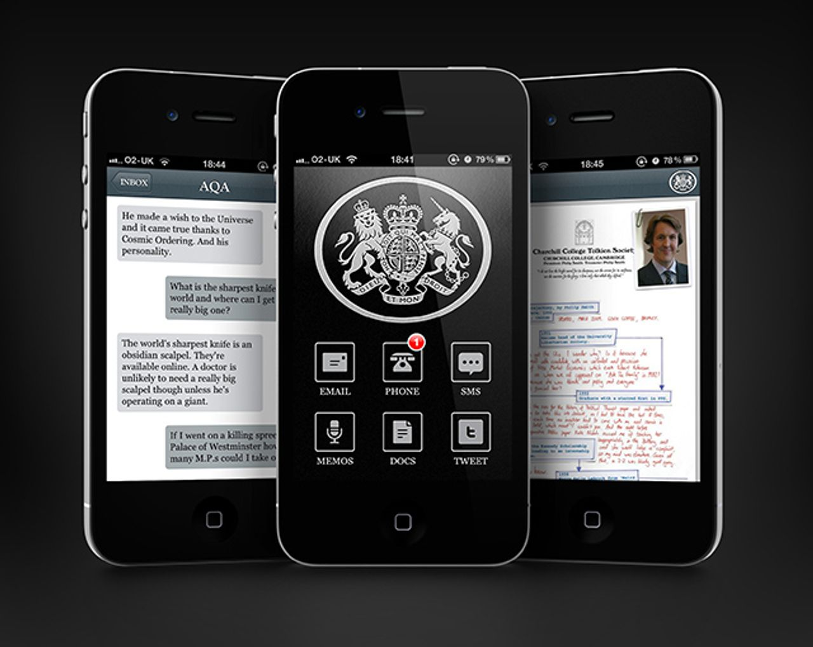

Welcome
This is a timeline of selected projects, jobs, and other things I've made with and around computers since the year 2000. It's intended to give an overview of the kinds of things I've done and where my interests and experience lie.
You can filter which entries are displayed with the selector at the top right of this page. If you're pressed for time, there's a greatest-hits category.
There's links to various other bits of me here.
Foom: A Strategic Simulation
In January 2025 I joined the creative team behind Foom, an immersive strategic simulation designed to engage participants in exploring the future of artificial intelligence (AI) and its societal impact. It's part foresight workshop, part immersive theatre show.
I'm building software to run the show, from tablet interfaces for participants to live ambient news displays and the showrunning backend. I'm also helping to shape the experience and game design.
tl;dr: using LLMs as research tools
In early 2024, my team and I at BBC R&D spent some time building research tools powered by large language models. We wanted to find out if they could help with analysis of research interviews, and in a project we had exploring trend analysis and collective intelligence.
We found that they were really useful for some use cases, especially summarising and tagging text material. However, we had to develop some pretty elaborate strategies to prevent them from hallucinating data which didn't exist. Not ideal in a research context!
#machine-learning #llm #ai #bbc-rd #producer #creative-technologist #research
Dorkbot Manchester
Working with artist Anthony Hall, I restarted Dorkbot Manchester in 2023.
Dorkbot is an international group of meetups for artists, engineers, designers, scientists, inventors, and anyone else working under the broad umbrella of electronic art. Dorkbot meetings aim to nurture a local electronic arts community and to encourage people to talk about the work they're doing, and to foster discussion about that work in a friendly, supportive, informal atmosphere.
PROJECTIONS: "Things are not normal"

A foresight report produced as Lead Foresight Researcher in BBC R&D's Advisory Team.
My inital brief was to compile a list of technologies and platforms that R&D and the wider BBC should be paying attention to over the next few years. I immediately blew up my own scope by countering: yes, of course, but we should also be looking at the wider social & political contexts in which the BBC's audiences (and the BBC itself) will be operating in those years. To narrow our scope to technologies alone would be missing the whole picture: nobody and no company uses technology in a vacuum, and we need to anticipate the futures in which our audiences will be using technologies in order to design and build products which will be useful to them in those futures.
The report went down very well both inside and outside the BBC; people tell me that it has a depth and concern for big-picture issues like inequalities and the environment that they don't often see in tech (and adjacent) industry foresight reports. Even better, a fair few people have told me that it's inspired a lot of new thinking for them, which is great!
#publications #research #bbc-rd #greatest-hits #foresight #strategy
Lead Foresight Researcher, BBC R&D
In 2022, I was given the opportunity to make a long-standing research interest in futures & foresight methodologies into my full-time job at BBC R&D. My remit was to build a foresight function in R&D's new Advisory Team. The Advisory Team's remit as a whole is to keep an eye on emerging technologies and advise the rest of the BBC on how they might impact on the business and the lives of our audiences. I built a team to work on foresight activites, designed working practises which enabled us to operationalise foresight methodologies as part of our day-to-day work, and led the production of two major foresight reports, along with generally providing foresight support and insight to the rest of the Advisory Team.
Electromagnetic Field 2022
I was Team Lead for Art & Installations at EMF2022. Responsibilities included running and recruiting to the team, artist scouting and outreach, coordinating an Arts Council funding bid, curation, artist comms, and helping to set up and maintain installations and look after the artists during the festival.
Ethical Dilemma Cafe
A physical event in Manchester for MozFest 2022. I designed and built a satirical loyalty scheme for the cafe - vistors can sign up on their phone for free drinks during the event (using a social media account, naturally). There's a catch though - the system asks a personal question in exchange for the drinks, and the questions get more probing with each successive drink...
Crystal Bennes, When Computers Were Women
four hand-woven Jacquard wall hangings made of recycled cotton, organic cotton and lambswool, 70cm x 300cm each
When Computers Were Women is a project connected to feminist critiques of physics, and stems from an invited residency at CERN (the European Organisation for Nuclear Research) in 2018.
I helped Crystal ingest punch card data from photos she'd taken at CERN and translate that data into a format that could be read by software driving the modern weaving machines.
#art #artistic-collaborator #software #exhibition #installation #creative-technologist #greatest-hits
Better Images of AI
Abstract, futuristic or science-fiction-inspired images of AI hinder public understanding of the technology’s already significant societal and environmental impacts. Images relating machine intelligence to human intelligence set unrealistic expectations and misstate the capabilities of AI. Such images potentially sow fear, and research shows they can be laden with historical assumptions about gender, ethnicity and religion. A new non-profit collaboration are researching, creating, curating and providing Better Images of AI.
I led a joint research project for the Better Images of AI collaboration with London College of Communication, contributed to the website build, and initiated and ran two artist commissions - including sorting out the fine details of licensing images under Creative Commons.
Interactive Audio Augmented Reality in Participatory Performance
Nagele, A. et al. (2021)
This study examines how audio human-computer interaction can prompt and support actions, and how audio AR can contribute to developing new kinds of interactions in participatory performance. It draws from aspects of multi-player audio-only games and interactive storytelling. A user experience study of the performance shows that people are engaged with interactive content and interact and navigate within the spatial audio content using their whole body. The performative aspect was well-received and participants took on roles and responsibilities within their group during the experience.
Browsing with Alexa: Interrogating the impact of voice assistants as web interfaces
An article co-authored with media scholar Simone Natale and published in Media, Culture & Society.
Voice assistants such as Siri, Alexa, and Google Assistant have recently been the subject of lively debates in regard to issues such as artificial intelligence, surveillance, gender stereotypes, and privacy. Less attention, however, has been given to the fact that voice assistants are also web interfaces that might impact on how the web is accessed, understood and employed by users.
Looking for Nigel

An interactive story for Bose's AR audio sunglasses. We worked with theatre makers and an artist, writer and placemaker to create a spatial audio story which plays out as a series of waypoints dropped into a nearby park when the app is opened.
I created some early experience prototypes and designed and led the project.
#bbc-rd #sound #audio-ar #ar #prototyping #team-lead #producer #creative-technologist #greatest-hits #immersive
Punchdrunk: Audience of the Future

Towards the end of 2019, I took a short sabbatical from the BBC to work on a research and prototyping project for legendary immersive theatre company Punchdrunk.
Our brief was to investigate possible technologies for keeping track of audience members during a show, creating little personal moments using that data, and structures for self-running game-like set-pieces. We ended up delivering a scratch show, through which an audience member's journey touched on demonstators of these technical possibilities.
I was technical lead on the project and recruited a team of specialists to work on various aspects of the show and its enabling technologies. I architected and wrote the overall system and backend which ran the show, built the software and hardware to run one of the set-piece games and did a lot of work to pull the whole thing together, both technically and as a producer. I also built a number of small exploratory prototypes in the early stages of the project, was a key member of the show's creative team, and spent a not-insignificant amount of time acting as intepreter and mediator between creative, technical and design staff.
#freelance #hardware #electronics #software #installation #immersive #prototyping #research #team-lead #greatest-hits #creative-technologist
Designing an Interactive and Collaborative Experience in Audio Augmented Reality
Bauer, V. et al. (2019)
This paper proposes an experiment to examine how spatial audio can prompt and support actions in interactive AAR experiences; how distinct auditory information influence collaborative tasks and group dynamics; and how gamified AAR can enhance participatory storytelling.
Audio AR

The second large research and prototyping project I led at BBC R&D.
We noticed that spatial audio, locative audio and audio AR were starting to appear in consumer-level technology. Much like our previous project on voice devices, I initiated a project which would explore the material properties of the available consumer hardware and do design research to devise UX guidelines.
We produced one immersive storytelling prototype in-house and hosted a second project by two PhD students from Queen Mary's University in London which explored group and embodied interactions in an augmented audio space.
#bbc-rd #sound #audio-ar #ar #research #producer #team-lead #prototyping #greatest-hits #immersive
Dora García: Segunda Vez / Second Time Around

For a retrospective of Dora Garia's work at MNCARS, Madrid, Dora wanted a version of Twenty-three million stories that would be 'living in the air' of the museum, inivisibly, accessable by visitors' mobile phones. Having developed a sensible distrust of Bluetooth, and not wanting to force installation of an app to see the stories, I came up with the idea of staging a digital intervention on the museum's wifi network. Every time a visitor logged on to wifi, they would see a generated story instead of the museum's usual portal page.
Dora liked the idea, so I worked with museum staff to implement the intervention for the duration of the exhbition.
#art #software #installation #exhibition #language #artistic-collaborator #creative-technologist #greatest-hits #greatest-hits
Dora García, Twenty-three million, five hundred and eighty-six thousand, four hundred and ninety stories
I worked with artist Dora García to create this project for the London Bookshop Map iPhone app. The app allows users to generate a short story by pressing a button, which are created by cutting up existing short stories from Dora's previous project, All the Stories. The stories that users create by pressing the button become part of Dora García’s Twenty-three million, five hundred and eighty-six thousand, four hundred and ninety stories (2013 ‑ ongoing) and are updated immediately to a blog.
In 2018, I span the story generator out from the app onto its own standalone website.
#art #software #installation #exhibition #language #artistic-collaborator #web #greatest-hits #creative-technologist
I Am Running In The Cloud
An experiment for two Amazon Echoes. Each repeats a text to the other, introducing new errors on every repetition. A homage to Alvin Lucier, via Oulipo S+7.
#art #software #amazon-echo #language #sound #installation #creative-technologist #greatest-hits
The Inspection Chamber

An original interactive comedy science fiction audio drama pilot for voice devices, made in collaboration with a leading independent radio drama producer, where you play a part in the action using your own voice.
This was the first product the BBC released for Amazon Alexa, and we had lots of positive feedback from users, the industry, and in the press.
I designed and led the project, did some early experience prototyping, and was its lead producer.
#bbc-rd #software #vui #amazon-echo #sound #greatest-hits #prototyping #team-lead #producer #immersive
Talking With Machines: Prototyping Voice Interfaces For Media
Cooke, H. et al. (2017).
Voice User Interfaces (VUI) and consumer products such as Amazon Echo and Google Home are rapidly gaining popularity and are already being used as media devices in the home. The relative novelty of this class of interface means that there is little existing literature describing UX for VUI. This paper describes a methodology we are developing to address this lack of literature, followed by some design principles we have discovered during our work on prototype VUIs.

Tellybox: Nine Speculative Prototypes For Future TV
Miller, L. et al. (2017)
We have developed nine speculative ("half-resolution") prototypes as part of our project to explore future possibilities for television experiences as widely as possible. The prototypes are physical representations of our research into why people watch television and what they like and dislike about it. Their physicality improves engagement and quality of feedback, at low cost.
Haunted Random Forest
I exhibited Faces in the Cloud at Haunted Random Forest in Brighton in April 2017.
#art #software #bots #installation #exhibition #machine-vision #events
Talking With Machines
Talking With Machines was the first project I led at BBC R&D. We were interested in the emerging category of voice devices and interfaces, spearheaded by Amazon with their Echo device, and Alexa.
We obtained a developer version of the Echo, and I made some quick prototypes to get a feel for the interactions and capabilities of the device.
I then designed a project to explore voice devices. It was a two-pronged approach: on the one hand, we'd be making working prototypes to understand how the devices worked, and on the other we'd be doing design research and devising a set of UI guidelines to help others around the BBC and elswhere make things.
The project was a great success: we created protypes and guidelines that laid the groundwork for the BBC's later work on these devices, as well as releasing public-facing protoypes that established the BBC in the space and led the way for other creators and publishers. Years later, people still tell me that the guidelines we released help them to create work for these platforms!
#bbc-rd #sound #voice #vui #research #prototyping #software #greatest-hits #producer #team-lead
BBC Research & Development
I initially joined BBC R&D as a freelance creative technologist, working on experience prototypes for a content analysis, discovery, and recommendation system. I liked it so much I stayed, and joined full-time in 2016, working as a technologist, producer, and researcher. I pivoted to foresight research in my last few years there, and left at the end of 2024.
Highlights included designing and leading a discovery and prototyping project on voice interfaces, a follow-up on audio AR, becoming a published author, and leading our first futures and foresight reports.
The Body
In December 2014, working with Tim Burrell-Saward as ELK, we helped renowned experimental theatre duo Nigel Barrett and Louise Mari to win the The Oxford Samuel Beckett Theatre Trust Award for "The Body": an intimate, immersive theatrical performance.
We were tasked with peppering the performance with discreet technologies designed to help stimulate senses and provoke responses from the unaware audience. These technologies included peripheral vision LED screens, sub-bass chairs, live heart-rate-to-sound conversion and projection mapping.
In November 2015 the concept was developed into a breathtaking full performance which enjoyed a sold-out run at the Barbican in London and was described by The Guardian as "a seat-shaking, soul-searching techno-futurist experience".
#freelance #hardware #electronics #software #installation #immersive #prototyping #greatest-hits #creative-technologist #greatest-hits #research
Pastcards

Pastcards was a boutique, arty little service I ran from to November 2015 October 2017. Every month subscribers would recieve a physical postcard in the mail, featuring an image from their personal Instagram feed picked by a tasteful robot.
The image chosen remained a mystery to people until it arrived on their doormat; I was playing with the delightfulness of a surprise postcard in the mail, plus a kind of de-ephemeralisation of otherwise disposable social media posts.
#software #web #art #greatest-hits #creative-technologist #greatest-hits
The New Sublime
I exhibited Faces in the Cloud at The New Sublime in Brighton in September 2014.
#art #software #bots #installation #exhibition #greatest-hits
The Throne at Game of Crowns
Created as the focal point of a month long Christmas 2013 event at Kensington Palace curated by legendary games designers Hide&Seek, the Throne was designed to offer visitors a magical, fairytale experience: the opportunity to be crowned under a title of their own creation.
Each visitor was given an empty title board which they then filled with a choice of over one hundred different adjectives, titles and places. They then walked the red carpet and took their place on the throne. Thirteen golden trumpets then sounded a royal fanfare, with coloured streamers shooting out of each. A regal voice then emanated from the throne, presenting the visitor to the crowd using their chosen title. And there was much rejoicing.
This was a project built with Tim Burrell-Saward as ELK. I wrote the software which ran the installation, designed the technical platform, worked with Tim on the electronics and did the majority of the digital experience design.
#hardware #electronics #software #installation #elk #greatest-hits #creative-technologist #immersive
The London Bookshop Map

An iPhone app built for the publishers of the lovely London Bookshop Map. The app shows users the nearest independent bookshop to their current location in London, and allows them to search for specialisms including art, children’s, secondhand and many more.
The app also features a commission by artist Dora García. Choose to generate a story and it will be added to her ongoing project Twenty-three million, five hundred and eighty-six thousand, four hundred and ninety stories (2013–ongoing).
I built the app, collaborating with the map's designers to keep the app's design faithful to the printed map. I also collaborated with Dora García to create the story generator.
#iphone #creative-technologist #software #freelance #art #artistic-collaborator #language
East London Kinetics
In August 2013, I founded East London Kinetics (ELK), a physical / digital design studio with Tim Burrell-Saward.
We worked in physical product design, creative software development, embedded electronics and interaction design to create objects and spaces that sense and react to the world around them.
We built things that that tell stories.
Early Days (of a better nation)
In 2013, I participated in an Ideas Lab at Kings College, London. The Lab brought together creative technologists, arts and cultural organisations and academic researchers.
I ended up working with Coney, an interactive theatre company, on their fledgling show Early Days (of a better nation). In a team with two other technologists, we set about building a prototype system to allow remote audience members to interact meaningfully with events and people in a live theatre space.
However! I wasn't writing software for long. Not long into the project, it became clear that we had a communication problem: the artists and technologists couldn't understand each other. Our artistic partners were talking about beats and narrative and how they wanted the audience to feel. The technologists just wanted a list of features to implement.
I took it upon myself to meet with the theatre makers at Coney, taking time to understand what they wanted to achieve with the prototype. I then spent some more time translating that into a set of requirements that the developers could build. I spent the rest of the project sitting in this in-between role, helping the artists and technologists understand one another, unblocking our communications.
It was a formative project for me, and one which set me on the path of being a glue person, enabling artists and technologists to work together effectively. Something which is an important part of my practise today.
Faces in The Cloud
An ongoing, automated exploration of machine pareidolia which ran from January 2013 - October 2015.
Pareidolia in humans is a perceptual tic peculiar to the way our nervous systems evolved: it’s better to assume an unidentified shape in the bushes as a hungry tiger rather than a funny-shaped bush. Machines don’t have that genetic baggage: what do these images reveal about the unevennesses in their perceptual model of the world? How does pareidolia work when it’s a mode of pareidolia arising from machine perception?
Philter Phactory

Definitely one of the strangest gigs I've had. My experiments with language-processing bots led to a year or so working for Philter Phactory, whose main product was Weavrs: autonomous social bots.
I wrote 'prosthetics' for the Weavrs which enabled them to generate their own strange broken poetry, and a suite of linguistic 'effects pedals' with which users could give their bots particular accents, stylistic traits or idiosyncracies. I also did a bunch of general backend programming, housekeeping, documentation and playful prototyping.
In addition, we modified a Teddy Ruxpin doll which we connected to the internet and took to conferences, providing a physical body for the bots to inhabit while we talked about them. I told you it was a strange gig.
#freelance #software #bots #web #language #greatest-hits #jobs
Björk, Biophilia
Working with biomedical animator Drew Berry, I created a custom video player and interactive DNA replication music sequencer for Björk's Biophilia app album.
#art #iphone #creative-technologist #software #freelance #greatest-hits
Malcolm Tucker: The Missing Phone
While I was working with app development company Agant, we were approached by Faber & Faber with a brief to create an iPhone version of a book they had coming out based on The Thick of It. They didn't just want a simple ebook - they wanted something that would use the affordances of the device to make something that felt native to the phone.
The concept of the book was that one of the show's main characters, Malcolm Tucker, had left a folder full of sensitive documents on a train. The book was the illict contents of this folder.
After a few phone calls thinking about how to approach the brief, I came up with the idea of translating the concept of the book to something that would make sense on an iPhone. If the book simulated the experience of finding a folder full of paper documents, maybe the app should simulate the experience of finding Malcolm's phone?
It was one of those beautiful ideas which completely unlocks a project. From there, the rest of the design just flowed. We reformatted material from the book into emails, text messages and file attachments. Members of the cast recorded new material as voicemails, and then we added our crowning achievement - a story engine which, when triggered, would play out the storyline of Malcolm trying to get his phone back over a couple of days of the user's real time, using notifications to send new voicemails, emails and messages.
The app was wildly successful - people loved the feel of rifling through a fictional character's phone, and the experience of living through a realtime, personal story. We had loads of great reviews, and in 2011 it became the first app to be nominated for a TV BAFTA.
I was sole developer on the project and led its creative development.
#iphone #creative-technologist #software #freelance #greatest-hits
Launchball

A physics-based Flash game I built for the Science Museum during my stint at Preloaded. It eventually racked over 10 million plays, and won a slew of awards, including Best in Show and Best Game at SXSW 2008 and Technical Excellence at Flash in the Can.
I was sole developer on the project, and contributed heavily to the game design.
#flash #games #creative-technologist #software #greatest-hits #preloaded
Preloaded
My second London agency job. I worked at Preloaded from 2006 - 2008 as a Flash developer, building games and microsites.
After leaving in 2008, I went freelance as a Flash and iPhone developer and creative technologist until joining BBC R&D in 2016.
Tonic
I cut my agency teeth at Tonic, my first London job. Most of my work was producing Flash microsites, and I quickly progressed through projects of increasing ambitiousness and scope. It was here that I learned to produce high-quality work under agency deadlines and when I really started to learn the craft of creative development.
Codemasters
I worked at Codemasters in their fledgling Online Marketing department in 2000 and 2004, bookending my university years. My second ever real job, I cranked out a lot of banner ads and microsites as part of the marketing campaigns for their games, but by far the most fun bit was creating viral games in Director and Flash to support those campaigns.